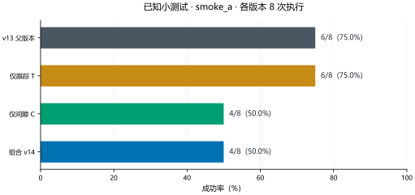
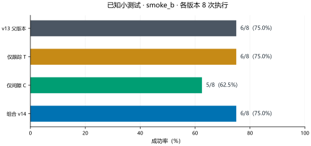

smoke_b
v13 父版本6 / 8
仅跟踪 T6 / 8
仅间隙 C5 / 8
组合 v146 / 8
小测试未达标，按协议停止后续大批量实验。
小测试未达标，按协议停止后续大批量实验。
小测试未达标，按协议停止后续大批量实验。
本页完整阶段累计 64 次实际评估执行；同一条件在修订和变体间重复，不能把执行总数当作独立起点数。机制测试、保存输入回放与物理重放另计，不增加实验样本。
原 BC 与世界模型权重冻结；已知诊断和开发数据用于筛选。只有冻结后全新起点上的配对确认才用于独立评估。小测试改善不能直接代表泛化改善，共享恢复收益也不等于世界模型独有收益。
旧代码、权重、实验和失败修订全部保留。本轮不做泛化训练，不写论文，不降低保护阈值。
最新完整小测试 smoke_b。下列起点已经用于定位问题，是已知诊断案例，不能用于独立泛化结论。
| 目标案例 | v13 | 仅 T | 仅 C | v14 |
|---|---|---|---|---|
| 斜靠接近 / BC + 噪声demo_13000021 | 未完成 · 400 步 | 未完成 · 400 步 | 未完成 · 400 步 | 未完成 · 400 步 |
| 箱沿下降 / Full s41 + 噪声demo_13000022 | 未完成 · 400 步 | 未完成 · 400 步 | 未完成 · 400 步 | 未完成 · 400 步 |
T 是路径跟踪：根据实际运动与关节余量调整接近，并核验替代路径。C 是下降间隙处理：间隙不足时停下、居中或撤退，再重新核验。
修订 B 在第 258 步进入下降，294 步进入抬升，311 步进入搬运。末段保持抓持，但搬运时接近关节限位，400 步内仍未成功。
第一次旋转阶段仍在第 231 步超时。后续重规划消耗剩余预算，接近末端才靠近目标位姿，未在预算内开始下降。
仅 C 让旧案例 demo6000005 退步：居中后完成抓取和搬运，却到第 392 步才开始释放，400 步结束时尚未成功。
组合 v14 的 8/8 个条件与仅 T 的动作和状态逐步完全相同；组合中的 C 事件数为 0。本批组合结果只能体现 T 的作用，不能把改善归功于 C，也没有证明 T+C 的额外收益。
优先检查持物搬运阶段的关节余量与经过核验的等价路径；箱沿旋转应更早识别无进展；间隙处理需要为抬升、搬运和释放保留剩余步数。继续保持 400 步和全部原保护阈值，先通过同一小测试与组件对照，再考虑大批量实验。
左侧 v13，右侧 v14。保留实际动作和任务终点，不以局部抓取成功代替完整任务成功。
各阶段的样本规模与用途不同，不合并成一个成功率。未达标修订保留原始数据；只有通过前阶段门槛才进入后续大批量实验。
分类条件使用条形或散点，不把任意案例顺序连成趋势线。已知条件只报告描述统计；独立确认区间按起点成组重采样。每幅图附 600 dpi 位图、矢量文件和数据表。
图表说明与来源哈希 ↗
